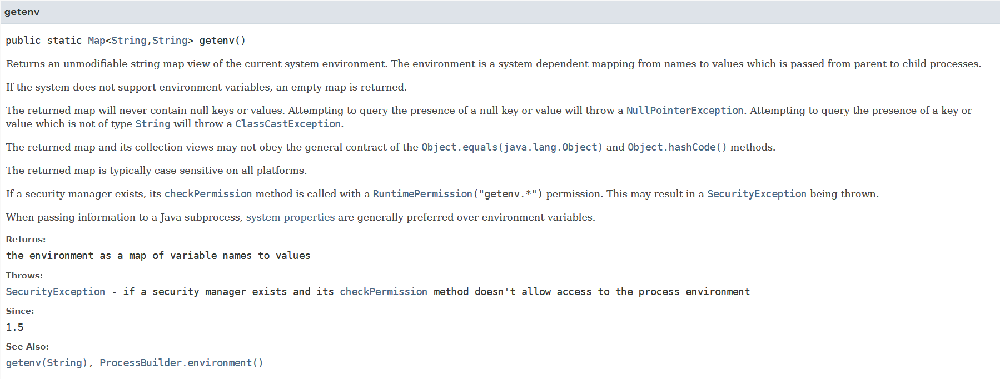

最近在学习前辈们的项目，发现自己真的菜，在项目中关于 "如何判定操作系统并对此执行不同的命令" 的部分感觉十分的实用！准备记一下笔记，同时因为用 ProcessBuilder 方法执行命令也不是很熟练（Runtime 方法好像要被淘汰了），所以也跟着一起总结 + 复刻一下
# 1. 判断系统类型
直接上代码，一条语句即可判断系统类型：
boolean isWindows = System.getProperty("os.name").toLowerCase().startsWith("windows"); |
其中最主要的就是 System.getProperty () 函数，其中 "os.name"就是操作系统名称。当然System.getProperty()还可以使用其他参数获取对应系统信息，这里po些应该比较常用的：
| 参数 | 含义 |
|---|---|
| java.version | Java 版本号 |
| java.home | Jre 目录 |
| java.specification.name | Java 规范名称 |
| java.class.version | Java 类版本号 |
| java.class.path | Java 类路径 |
| Java lib 路径 | |
| os.name | 操作系统名称 |
| os.version | 操作系统版本号 |
| file.separator | 文件分隔符 |
| path.separator | 路径分隔符 |
| line.separator | 直线分隔符 |
| user.name | 用户名 |
| user.home | 用户的主目录 |
| user.dir | 当前程序所在目录 |
既然学就学一套！又去查了下 API 文档 System 类中有关系统信息的函数，包括:
public static String getProperty(String key) | |
public static String getProperty(String key,String def) | |
public static String setProperty(String key,String value) | |
public static String getenv(String name) | |
public static Map<String,String> getenv() |
简单看一眼他们都是干什么的：
# 1.1 public static String getProperty(String key)
获取由指定 Key 指示的系统属性：首先，如果有安全管理器，则将 Key 作为参数调用 checkPropertyAccess。这可能会导致 SecurityException。 如果没有当前的 system properties，则首先以与 getProperties 方法相同的方式创建和初始化一组系统属性。
参数为 Key，即系统属性的名字，返回值为系统属性对应的 value 值，如果没有名字为 Key 的系统属性则返回 null
# 1.2 public static String getProperty(String key,String def)
同样获取由指定 Key 指示的系统属性。 唯一的区别是不会产生 SecurityException，参数多了个默认值，但该函数本人还未理解于上个函数的区别（如果仅仅是不会产生错误，那为什么不用这个呢？），留个小尾巴，之后补上
# 1.3 public static String setProperty(String key,String value)
设置由指定 Key 指示的系统属性： 首先，如果存在安全管理器，则使用 PropertyPermission（key，“write”）权限调用其 SecurityManager.checkPermission 方法。这可能会导致引发 SecurityException。
如果没有抛出异常，则将指定的属性设置为给定值，有趣的是该函数还会返回原来该 Key 对应的属性值
# 1.4 public static String clearProperty(String key)
删除由指定键指示的系统属性：首先，如果存在安全管理器，则使用 PropertyPermission（key，“write”）权限调用其 SecurityManager.checkPermission 方法。这可能会导致引发 SecurityException。
如果没有抛出异常，则删除指定的属性，并返回原来该 Key 对应的属性值
# 1.5 public static String getenv(String name)
获取指定环境变量的值。前面都是系统属性，两者的区别是什么呢？
系统属性和环境变量在概念上都是名称和值之间的映射。两种机制都可用于将用户定义的信息传递给 Java 进程，但是环境变量具有更广泛的影响，因为它们对定义它们的进程的所有后代都是可见的，而不仅仅是直接 Java 子进程可见。在不同的操作系统上，它们可以具有微妙的语义，例如是否区分大小写。比如在 UNIX 系统上，名称的字母大小写通常很重要，而在 Microsoft Windows 系统上，名称的字母大小写通常不重要。
基于以上原因，环境变量更有可能产生意想不到的副作用。官方建议的使用方法如下：最好在可能的情况下使用系统属性。当需要全局效果或外部系统接口需要环境变量（例如 PATH）时，应使用环境变量。
# 1.6 public static Map<String,String> getenv()

返回当前所有环境变量的键值对。如果系统不支持环境变量，则返回一个空映射。
# 2. ProcessBuilder 执行进程
关于为什么使用 ProcessBuilder 方法，在网上找到这么一句话：
通过 Java 执行系统命令，与 cmd 中或者终端上一样执行 shell 命令，最典型的用法就是使用 Runtime.getRuntime ().exec (command) 或者 new ProcessBuilder (cmdArray).start ()。从 JDK1.5 开始，官方提供并推荐使用 ProcessBuilder 类进行 shell 命令操作。
还有就是 Runtime 内部其实也是使用的 ProcessBuilder，综合来看 ProcessBuilder 都将成为执行命令的主流，于是写了个类似的示例，判断操作系统 + 特定执行操作的函数 ExcuteCommand ()
public static void ExcuteCommand() { | |
ProcessBuilder builder = new ProcessBuilder(); | |
boolean isWindows = System.getProperty("os.name").toLowerCase().startsWith("windows"); | |
try { | |
builder.redirectErrorStream(true); | |
String dir = "F:\\IDEA"; | |
List<String> stringList = new ArrayList<>(); | |
stringList.add("cmd"); | |
stringList.add("/c"); | |
stringList.add("truffle"); | |
stringList.add("version"); | |
//System.out.println(stringList); | |
if (isWindows) { | |
builder.directory(new File(dir)); | |
builder.command(stringList); | |
} | |
else { | |
builder.command("/bin/sh","-c","ll"); | |
} | |
Process process = builder.start(); | |
BufferedReader bufferedReader = new BufferedReader(new InputStreamReader(process.getInputStream(),"gb2312")); | |
String len = null; | |
while((len = bufferedReader.readLine()) != null) | |
{ | |
System.out.println(len); | |
} | |
} catch (IOException e) { | |
e.printStackTrace(); | |
} | |
} |
具体如何分割一条命令存入字符串，本人的见解就是有空格就要分开存储进 List 中。当然也可以使用一条字符串，之后 builder.command("cmd","/c",stringCommand) ，结果是一样的，但本人测试感觉适用度没有 StringList 好。最后的输出结果如下图，代表已经正确运行了查询 truffle 版本的指令，示例运行正确
# 参考链接
https://docs.oracle.com/javase/8/docs/api/java/lang/System.html#getProperty-java.lang.String-
https://www.cnblogs.com/xss512/p/11043446.html